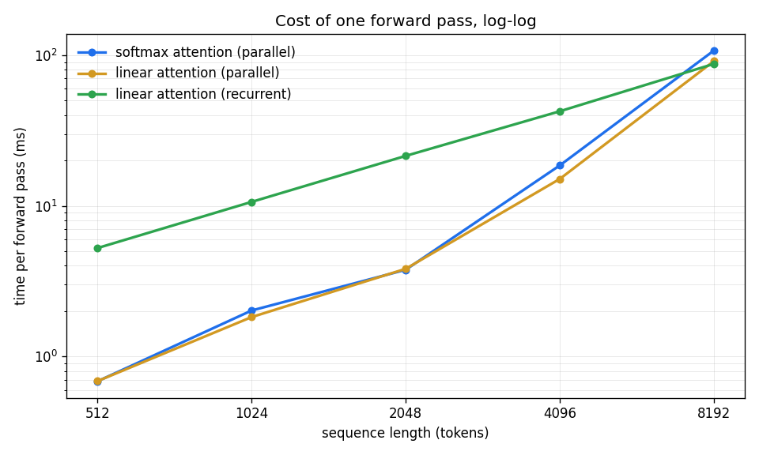

<!-- .slide: id="title" class="section-divider" data-state="is-section-divider" --> # LLMs 0 to 100 Module 12: The Future of LLMs Open questions and cutting edge research --- <!-- .slide: id="review-purpose" --> ## Review First, Then Four Open Questions <div class="slide-columns" style="grid-template-columns: repeat(2, 1fr); gap: 34px;"> <div> **First: the review** - Each module in one line - The five most durable concepts - How fast each layer goes stale </div> <div> **Then: the lecture** - Is attention the right primitive? - Three assumptions the course treated as fixed </div> </div> This module covers active research. Parts of it will be out of date within a few years. <!-- .element: class="text-lg" style="margin-top: 12px;" --> --- <!-- .slide: id="review-stack" --> ## Course Overview <div class="bench-table"> <table> <thead><tr><th>Module</th><th>What it added</th></tr></thead> <tbody> <tr><td>1 · Introduction</td><td>Tokens, probability, and entropy make text a <strong>prediction problem</strong></td></tr> <tr><td>2 · Perceptrons</td><td>Gradient descent makes any differentiable model <strong>learnable</strong></td></tr> <tr><td>3 · Attention</td><td>A <strong>soft lookup</strong> over the whole sequence, with no recurrence</td></tr> <tr><td>4 · Architectures</td><td>The <strong>transformer block</strong>: attention, an MLP, residuals, normalization</td></tr> <tr><td>5 · Pretraining</td><td><strong>Capability</strong>, and loss that falls as a power law in compute</td></tr> <tr><td>6 · Finetuning</td><td>An <strong>interface</strong>: the chat template, instruction following</td></tr> <tr><td>7 · RL</td><td><strong>Judgment</strong>: reasoning trained in with verifiable rewards</td></tr> <tr><td>8 · Multimodal</td><td>Other modalities become <strong>tokens in the same sequence</strong></td></tr> <tr><td>9 · Evaluation</td><td>Whether any of it <strong>actually worked</strong></td></tr> <tr><td>10 · Deployment</td><td>Weights become <strong>tokens per second</strong> at a price</td></tr> <tr><td>11 · Applications</td><td>Prompts, retrieval, tools, and loops turn an API into a <strong>product</strong></td></tr> </tbody> </table> </div> --- <!-- .slide: id="review-throughline" --> ## Everything Is Next-Token Prediction Every module worked on one problem: **predicting the next token.** <div class="slide-columns" style="grid-template-columns: repeat(3, 1fr); gap: 26px;"> <div> **Modules 1 to 4: represent** - Count - Learn - Attend - Stack </div> <div> **Modules 5 to 8: train** - Scale - Instruct - Judge - Add modalities </div> <div> **Modules 9 to 11: check and ship** - Measure - Serve - Build a product </div> </div> RL, retrieval, and agents are all built on top of next-token prediction. <!-- .element: class="text-lg" style="margin-top: 14px;" --> --- <!-- .slide: id="review-keepers" --> ## The Five Most Durable Concepts None of these depend on any particular architecture. <div class="card-grid cols-3"> <div class="card"><h4>Information theory</h4><p>Cross-entropy is <strong>average surprise</strong>. Every loss you minimized was a bit count.</p></div> <div class="card"><h4>Gradient descent</h4><p>The only learning algorithm this course ever used. Everything else was a choice of what to differentiate.</p></div> <div class="card"><h4>Attention</h4><p>Attention is $\mathrm{softmax}(QK^\top/\sqrt{d_k})V$ and nothing more.</p></div> <div class="card"><h4>Scaling laws</h4><p>Loss falls <strong>predictably</strong> with compute. That predictability is why anyone spends a billion dollars on a training run.</p></div> <div class="card"><h4>Evaluation</h4><p>You cannot improve what you <strong>cannot measure</strong>, and most measurements are worse than they look.</p></div> <div class="card"><h4>Where they come from</h4><p>Four of the five are from the first half of the course, before any of this was about language models.</p></div> </div> --- <!-- .slide: id="review-halflife" --> ## Half-Life of the Material Which parts of the course are worth relearning in five years, and which are not. <div class="bench-table"> <table> <thead><tr><th>Layer</th><th>Half-life</th><th>Status</th></tr></thead> <tbody> <tr><td>The math of Modules 1 and 2</td><td><strong>Permanent</strong></td><td>Entropy and gradient descent are not going to be revised</td></tr> <tr><td>The transformer (Modules 3, 4)</td><td><strong>Dominant, contested</strong></td><td>Nine years old, still winning, with serious challengers</td></tr> <tr><td>The recipe (Modules 5 to 7)</td><td><strong>Converging, moving</strong></td><td>Pretrain, finetune, RL is now standard, but the mix shifts yearly</td></tr> <tr><td>The application layer (Module 11)</td><td><strong>Turns over yearly</strong></td><td>Frameworks and patterns you learned this month may not survive the year</td></tr> </tbody> </table> </div> The foundations at the bottom of the table stay useful the longest. <!-- .element: class="text-lg" style="margin-top: 14px;" --> --- <!-- .slide: id="review-scaling" --> ## Scaling, Updated The power laws still hold. The supply of cheap training data does not. <div class="slide-columns" style="grid-template-columns: repeat(2, 1fr); gap: 34px;"> <div> **The constraint** - Chinchilla: more compute wants proportionally more tokens - Usable public text is finite; estimates put exhaustion in this decade - Each constant step down in loss costs a **constant multiple** of compute </div> <div> **The responses** - **Curate harder.** Filtered, textbook-quality data beats raw web text per token - **Generate data.** Caveat: train on your own output and the tails disappear (model collapse) - **Spend at inference.** The axis that actually moved, and it returns later in this lecture </div> </div> --- <!-- .slide: id="sidequest-gnn" --> ## Side Quest: Transformers Are Graph Neural Networks Attention is **message passing on a fully connected graph:** - Every token is a node - Attention weights are soft edges - Value aggregation is the message step <div class="slide-columns" style="grid-template-columns: repeat(2, 1fr); gap: 34px;"> <div> **Graph neural networks** The graph is given as input, and a node only exchanges messages with its neighbors. </div> <div> **Attention** No graph is given: every token can attend to every other, and the weights on those edges are learned per input. That costs $O(n^2)$. </div> </div> Any nodes work: image patches, atoms, functions, users. The GNN literature covers the same machinery. <!-- .element: class="text-lg" style="margin-top: 12px;" --> --- <!-- .slide: id="review-roadmap" --> ## Lecture Roadmap: Four Questions <div class="card-grid cols-4"> <div class="card"><h4>Efficiency</h4><p>Is <strong>attention</strong> the right primitive? The $O(n^2)$ cost, and what replaces it.</p></div> <div class="card"><h4>Assumption one</h4><p>Text is generated <strong>left to right</strong>. The causal mask and the chain-rule factorization.</p></div> <div class="card"><h4>Assumption two</h4><p>Every token gets the <strong>same computation</strong>. Depth is fixed at training time.</p></div> <div class="card"><h4>Assumption three</h4><p>Learning <strong>stops at deployment</strong>. The weights never change again.</p></div> </div> The first question is how to compute the distribution more cheaply. The other three question design choices the course presented as fixed. <!-- .element: class="text-lg" style="margin-top: 14px;" --> --- <!-- .slide: id="divider-attention" class="section-divider" data-state="is-section-divider" --> # Is Attention the Right Primitive? What replaces quadratic attention --- <!-- .slide: id="attention-bill" --> ## The Cost of Attention Two costs, both paid on every request. <div class="slide-columns" style="grid-template-columns: repeat(2, 1fr); gap: 34px;"> <div> **Compute: $O(n^2)$** - Score matrix is $n \times n$ - Double the context, quadruple the work - FlashAttention shrank the constant, not the exponent </div> <div> **Memory: the KV cache** - Stores a key and value per generated token - Grows linearly with sequence length - Dominates serving memory at long context </div> </div> Removing these costs requires giving something up. <!-- .element: class="text-lg" style="margin-top: 12px;" --> --- <!-- .slide: id="attention-drop-softmax" --> ## Linear Attention: Removing the Softmax Replace the exponential with any positive feature map $\phi$. The same computation now has **two forms.** $$\mathbf y_t = \frac{\phi(\mathbf q_t)^\top \sum_{i \le t} \phi(\mathbf k_i) \mathbf v_i^\top}{\phi(\mathbf q_t)^\top \sum_{i \le t} \phi(\mathbf k_i)}$$ <div class="slide-columns" style="grid-template-columns: repeat(2, 1fr); gap: 34px;"> <div> **As a matrix** - Build the $n \times n$ score matrix, mask, normalize, multiply by values - Standard attention minus the softmax - Cost: $O(n^2)$ </div> <div> **As a running sum** - Keep $\mathbf S_t = \mathbf S_{t-1} + \phi(\mathbf k_t)\mathbf v_t^\top$ - An **RNN** with a matrix hidden state - Cost: $O(n)$ time, $O(1)$ memory </div> </div> Both produce the same numbers. Katharopoulos et al. (2020) titled the paper "Transformers are RNNs": the equivalence is a theorem. The exercise has you check it. <!-- .element: class="text-lg" style="margin-top: 12px;" --> --- <!-- .slide: id="attention-grouping" --> ## Associativity Determines the Cost <div class="svg-figure"> <svg viewBox="0 0 1000 400" role="img" aria-label="Two ways to group the same matrix product. Grouping left builds an n by n intermediate matrix, 268 megabytes at 8192 tokens. Grouping right builds a d by d intermediate state, 16 kilobytes regardless of sequence length."> <text x="20" y="42" fill="#8892a4" font-size="20" font-family="Inter, sans-serif">Group to the left</text> <text x="20" y="86" fill="#e8eaf0" font-size="30" font-family="Inter, sans-serif">( φ(Q) φ(K)ᵀ ) V</text> <path d="M 300 76 L 372 76" stroke="#8892a4" stroke-width="2" fill="none" /> <path d="M 372 76 l -10 -5 l 0 10 z" fill="#8892a4" /> <rect x="392" y="12" width="130" height="130" fill="none" stroke="#f5a623" stroke-width="3" /> <text x="457" y="84" fill="#f5a623" font-size="26" font-family="Inter, sans-serif" text-anchor="middle">n × n</text> <text x="556" y="60" fill="#e8eaf0" font-size="22" font-family="Inter, sans-serif">8192 × 8192 at 8k context</text> <text x="556" y="94" fill="#f5a623" font-size="22" font-family="Inter, sans-serif">268 MB, and it grows with n²</text> <line x1="20" y1="196" x2="980" y2="196" stroke="#2a3450" stroke-width="2" /> <text x="20" y="248" fill="#8892a4" font-size="20" font-family="Inter, sans-serif">Group to the right</text> <text x="20" y="292" fill="#e8eaf0" font-size="30" font-family="Inter, sans-serif">φ(Q) ( φ(K)ᵀ V )</text> <path d="M 300 282 L 372 282" stroke="#8892a4" stroke-width="2" fill="none" /> <path d="M 372 282 l -10 -5 l 0 10 z" fill="#8892a4" /> <rect x="392" y="270" width="26" height="26" fill="none" stroke="#50c878" stroke-width="3" /> <text x="440" y="292" fill="#50c878" font-size="26" font-family="Inter, sans-serif">d × d</text> <text x="556" y="266" fill="#e8eaf0" font-size="22" font-family="Inter, sans-serif">64 × 64, at every context length</text> <text x="556" y="300" fill="#50c878" font-size="22" font-family="Inter, sans-serif">16 KB, and it never grows</text> </svg> </div> Matrix multiplication is associative, so both orders give the same answer. Only one of them ever builds the big object. <!-- .element: class="text-lg" --> --- <!-- .slide: id="attention-softmax-price" --> ## What the Softmax Provides Dropping it costs two things. <div class="slide-columns" style="grid-template-columns: repeat(2, 1fr); gap: 34px;"> <div> **Sharpness** - The exponential lets **one key dominate** - Attention can select one token out of thousands - A linear kernel spreads weight across many keys </div> <div> **Unbounded memory** - All knowledge of the past must fit in $\mathbf S$, a **fixed-size** matrix - A KV cache reproduces any earlier token exactly - A fixed state cannot </div> </div> This is the RNN bottleneck, reintroduced deliberately. Open question: is a fixed-size summary good enough? <!-- .element: class="text-lg" style="margin-top: 12px;" --> --- <div class="figure-card">  <div class="figure-info"> ## Albert Gu <!-- .element: class="fragment fade-in" --> <div class="fragment fade-in"> ### S4 (2021), Mamba (2023) Built the state-space line, the most serious architectural challenger to the transformer since 2017. S4 derived a sequence model from a continuous-time dynamical system, an idea from control theory, not NLP. Mamba, with Tri Dao, made state transitions depend on the input and became competitive at scale. Co-author Tri Dao wrote FlashAttention, the work that made exact attention fast on real hardware. The person who made attention efficient is also building its replacement. This is an engineering argument, not a fight between camps. </div> </div> </div> --- <!-- .slide: id="attention-ssm" --> ## State-Space Models S4 derives the recurrence from a continuous-time system. **Mamba** adds selectivity: state transitions that depend on the input. <div class="svg-figure"> <svg viewBox="0 0 1000 340" role="img" aria-label="Two recurrences compared. S4 applies the same fixed update for every token. Mamba's update depends on the token: some tokens are stored into the state with a strong update, others are mostly forgotten."> <text x="20" y="34" fill="#8892a4" font-size="21" font-family="Inter, sans-serif">S4: fixed recurrence, the same update for every token</text> <g fill="none" stroke="#4a9eff" stroke-width="2"> <rect x="40" y="66" width="110" height="48" /><rect x="290" y="66" width="110" height="48" /><rect x="540" y="66" width="110" height="48" /><rect x="790" y="66" width="110" height="48" /> </g> <g fill="#e8eaf0" font-size="22" font-family="Inter, sans-serif" text-anchor="middle"> <text x="95" y="97">h₀</text><text x="345" y="97">h₁</text><text x="595" y="97">h₂</text><text x="845" y="97">h₃</text> </g> <g stroke="#4a9eff" stroke-width="3" fill="none"> <path d="M 150 90 L 280 90" /><path d="M 400 90 L 530 90" /><path d="M 650 90 L 780 90" /> </g> <g fill="#4a9eff"> <path d="M 280 90 l -12 -6 l 0 12 z" /><path d="M 530 90 l -12 -6 l 0 12 z" /><path d="M 780 90 l -12 -6 l 0 12 z" /> </g> <g fill="#8892a4" font-size="19" font-family="Inter, sans-serif" text-anchor="middle"> <text x="215" y="60">x₁</text><text x="465" y="60">x₂</text><text x="715" y="60">x₃</text> </g> <line x1="20" y1="160" x2="980" y2="160" stroke="#2a3450" stroke-width="2" /> <text x="20" y="204" fill="#8892a4" font-size="21" font-family="Inter, sans-serif">Mamba: selective recurrence, the update depends on the token</text> <g fill="none" stroke="#50c878" stroke-width="2"> <rect x="40" y="236" width="110" height="48" /><rect x="290" y="236" width="110" height="48" /><rect x="540" y="236" width="110" height="48" /><rect x="790" y="236" width="110" height="48" /> </g> <g fill="#e8eaf0" font-size="22" font-family="Inter, sans-serif" text-anchor="middle"> <text x="95" y="267">h₀</text><text x="345" y="267">h₁</text><text x="595" y="267">h₂</text><text x="845" y="267">h₃</text> </g> <path d="M 150 260 L 280 260" stroke="#50c878" stroke-width="5" fill="none" /> <path d="M 280 260 l -12 -7 l 0 14 z" fill="#50c878" /> <path d="M 400 260 L 530 260" stroke="#8892a4" stroke-width="2" stroke-dasharray="7 6" fill="none" /> <path d="M 530 260 l -12 -6 l 0 12 z" fill="#8892a4" /> <path d="M 650 260 L 780 260" stroke="#50c878" stroke-width="5" fill="none" /> <path d="M 780 260 l -12 -7 l 0 14 z" fill="#50c878" /> <g font-size="19" font-family="Inter, sans-serif" text-anchor="middle"> <text x="215" y="230" fill="#50c878">x₁ stored</text><text x="465" y="230" fill="#8892a4">x₂ forgotten</text><text x="715" y="230" fill="#50c878">x₃ stored</text> </g> </svg> </div> Selectivity is the LSTM's gating idea. Mamba keeps training parallel with an associative scan. RWKV reached a similar design independently. <!-- .element: class="text-lg" --> --- <!-- .slide: id="attention-verdict" --> ## The Empirical Results Where pure recurrent models stand against transformers, by task type. <div class="bench-table"> <table> <thead><tr><th>Task type</th><th>Pure recurrent models</th><th>Why</th></tr></thead> <tbody> <tr><td>Language modeling perplexity</td><td><strong>Competitive</strong> at modest scale</td><td>Most next-token prediction needs recent context, which a state summarizes fine</td></tr> <tr><td>Exact recall of an earlier token</td><td><strong>Behind</strong></td><td>The token was compressed into a fixed state; it cannot be reconstructed</td></tr> <tr><td>Copying, needle-in-a-haystack</td><td><strong>Behind</strong></td><td>Same reason. Random access is what was traded away</td></tr> </tbody> </table> </div> A fixed-size state predicts exactly this failure pattern, and the benchmarks confirm it. <!-- .element: class="text-lg" style="margin-top: 14px;" --> --- <!-- .slide: id="attention-hybrids" --> ## Production Models Use Hybrids **Jamba** and **Griffin** interleave a few attention layers among many recurrent ones. <div class="svg-figure"> <svg viewBox="0 0 1000 360" role="img" aria-label="A hybrid model's layer stack: eight layers, six recurrent and two attention. The attention layers provide random access to any earlier token at quadratic cost; the recurrent layers provide constant cost per token but no exact recall."> <g fill="none" stroke="#50c878" stroke-width="2"> <rect x="120" y="304" width="260" height="30" /><rect x="120" y="266" width="260" height="30" /><rect x="120" y="228" width="260" height="30" /><rect x="120" y="152" width="260" height="30" /><rect x="120" y="114" width="260" height="30" /><rect x="120" y="76" width="260" height="30" /> </g> <g fill="none" stroke="#4a9eff" stroke-width="3"> <rect x="120" y="190" width="260" height="30" /><rect x="120" y="38" width="260" height="30" /> </g> <g fill="#8892a4" font-size="18" font-family="Inter, sans-serif" text-anchor="middle"> <text x="250" y="324">recurrent</text><text x="250" y="286">recurrent</text><text x="250" y="248">recurrent</text><text x="250" y="172">recurrent</text><text x="250" y="134">recurrent</text><text x="250" y="96">recurrent</text> </g> <g fill="#4a9eff" font-size="18" font-family="Inter, sans-serif" text-anchor="middle"> <text x="250" y="210">attention</text><text x="250" y="58">attention</text> </g> <path d="M 400 205 L 480 205" stroke="#4a9eff" stroke-width="2" fill="none" /> <text x="500" y="196" fill="#4a9eff" font-size="21" font-family="Inter, sans-serif">attention: random access to any earlier token</text> <text x="500" y="226" fill="#8892a4" font-size="19" font-family="Inter, sans-serif">cost O(n²), KV cache grows with context</text> <path d="M 400 281 L 480 281" stroke="#50c878" stroke-width="2" fill="none" /> <text x="500" y="272" fill="#50c878" font-size="21" font-family="Inter, sans-serif">recurrence: constant cost per token</text> <text x="500" y="302" fill="#8892a4" font-size="19" font-family="Inter, sans-serif">fixed-size state, no exact recall</text> </svg> </div> Attention only where random access is needed. The same pattern appears in the next section. <!-- .element: class="text-lg" --> --- <!-- .slide: id="sidequest-bitter" --> ## Side Quest: The Bitter Lesson, Applied Here Sutton's essay: for seventy years, general methods that leverage computation beat methods built on human insight. Discussion questions: - Is Mamba's **selectivity** human-designed structure the lesson eliminates, or a better way to spend compute, which the lesson rewards? - Hybrid layer allocations are **hand-designed**. Somebody picked "one attention layer in eight." Does that survive? - Was **attention itself** the human-designed structure? The bitter lesson already displaced recurrent models once. No answer key. "Does this scale" and "is this clever" are different questions. Only the first has predicted the winner. <!-- .element: class="text-lg" style="margin-top: 12px;" --> --- <!-- .slide: id="attention-transition" --> ## Three Shared Assumptions Every model in this section, transformer and state-space alike, still does all three: <div class="card-grid cols-3"> <div class="card"><h4>Generates left to right</h4><p>One token at a time, never revising.</p></div> <div class="card"><h4>Spends fixed compute per token</h4><p>The same layers, every time, regardless of difficulty.</p></div> <div class="card"><h4>Freezes its weights</h4><p>Training ends, and learning ends with it.</p></div> </div> The next three sections question those. <!-- .element: class="text-lg" style="margin-top: 14px;" --> --- <!-- .slide: id="divider-diffusion" class="section-divider" data-state="is-section-divider" --> # Assumption One: Text Is Generated Left to Right Diffusion language models --- <!-- .slide: id="diffusion-assumption" --> ## Where the Assumption Is Encoded Two mechanisms from earlier modules enforce left-to-right generation. $$p(x_1, \dots, x_T) = \prod_{t=1}^{T} p(x_t \mid x_{<t})$$ <div class="slide-columns" style="grid-template-columns: repeat(2, 1fr); gap: 34px;"> <div> **The chain-rule factorization** - Exactly true for any ordering - Left to right makes the likelihood **exactly computable** in one pass </div> <div> **The causal mask** - Position $t$ cannot see position $t+1$ - One forward pass gives a valid prediction at every position </div> </div> Left-to-right is not a property of language. It is a factorization chosen for computational convenience. <!-- .element: class="text-lg" style="margin-top: 12px;" --> --- <!-- .slide: id="diffusion-costs" --> ## Costs of Left-to-Right Generation <div class="card-grid cols-3"> <div class="card"><h4>Strictly sequential</h4><p>One forward pass per token. Generation is <strong>memory-bound</strong>: the time goes to moving weights, not arithmetic.</p></div> <div class="card"><h4>No revision</h4><p>The model cannot change a token once it is generated, even after an early mistake becomes apparent.</p></div> <div class="card"><h4>No infilling</h4><p>The model structurally cannot condition on text <strong>after</strong> a blank. Every editing workflow is a workaround for this.</p></div> </div> Only the first of these is about speed. The other two are about what the model can express at all. <!-- .element: class="text-lg" style="margin-top: 14px;" --> --- <div class="figure-card">  <div class="figure-info"> ## Jascha Sohl-Dickstein <!-- .element: class="fragment fade-in" --> <div class="fragment fade-in"> ### Deep Unsupervised Learning using Nonequilibrium Thermodynamics (2015) Introduced diffusion models with an idea from statistical physics: destroy a structured distribution with noise until it becomes simple, then train a network to run the destruction backwards. The 2015 paper preceded the image-generation wave by years and text diffusion by a decade. Diffusion appeared earlier in the course for images. Here it competes for text generation. </div> </div> </div> --- <!-- .slide: id="diffusion-mechanics" --> ## Diffusion: Generation Without an Ordering Start fully masked. Unmask iteratively, refining the whole sequence over a few dozen steps. <div class="slide-columns" style="grid-template-columns: repeat(2, 1fr); gap: 34px;"> <div> **Training** - Mask a fraction of positions - Predict **every masked position at once** - Same denoising objective as span corruption in pretraining </div> <div> **Generation** - Start with everything masked - Predict all positions, keep the **confident** ones - Re-mask the rest, repeat </div> </div> Step count is a dial: few steps means fast but lower quality, many steps approaches autoregressive quality with less speedup. <!-- .element: class="text-lg" style="margin-top: 12px;" --> --- <!-- .slide: id="diffusion-order" --> ## Autoregressive vs Diffusion Generation <div class="svg-figure"> <svg viewBox="0 0 1000 360" role="img" aria-label="Autoregressive generation commits one token per forward pass, left to right, taking eight passes for eight tokens. Diffusion starts from all masked positions and unmasks the confident ones across four passes, filling positions in no particular order."> <text x="20" y="34" fill="#4a9eff" font-size="22" font-family="Inter, sans-serif">Autoregressive: one token per pass, always left to right</text> <g fill="none" stroke="#2a3450" stroke-width="2"> <rect x="20" y="56" width="216" height="34" /><rect x="274" y="56" width="216" height="34" /><rect x="528" y="56" width="216" height="34" /><rect x="782" y="56" width="216" height="34" /> </g> <g fill="#4a9eff"> <rect x="22" y="58" width="25" height="30" /> <rect x="276" y="58" width="25" height="30" /><rect x="303" y="58" width="25" height="30" /> <rect x="530" y="58" width="25" height="30" /><rect x="557" y="58" width="25" height="30" /><rect x="584" y="58" width="25" height="30" /> <rect x="784" y="58" width="25" height="30" /><rect x="811" y="58" width="25" height="30" /><rect x="838" y="58" width="25" height="30" /><rect x="865" y="58" width="25" height="30" /><rect x="892" y="58" width="25" height="30" /><rect x="919" y="58" width="25" height="30" /><rect x="946" y="58" width="25" height="30" /><rect x="973" y="58" width="23" height="30" /> </g> <text x="20" y="116" fill="#8892a4" font-size="19" font-family="Inter, sans-serif">pass 1</text> <text x="274" y="116" fill="#8892a4" font-size="19" font-family="Inter, sans-serif">pass 2</text> <text x="528" y="116" fill="#8892a4" font-size="19" font-family="Inter, sans-serif">pass 3</text> <text x="782" y="116" fill="#8892a4" font-size="19" font-family="Inter, sans-serif">pass 8</text> <line x1="20" y1="160" x2="980" y2="160" stroke="#2a3450" stroke-width="2" /> <text x="20" y="206" fill="#50c878" font-size="22" font-family="Inter, sans-serif">Diffusion: every position at once, unmasking the confident ones</text> <g fill="none" stroke="#2a3450" stroke-width="2"> <rect x="20" y="228" width="216" height="34" /><rect x="274" y="228" width="216" height="34" /><rect x="528" y="228" width="216" height="34" /><rect x="782" y="228" width="216" height="34" /> </g> <g fill="#50c878"> <rect x="303" y="230" width="25" height="30" /><rect x="384" y="230" width="25" height="30" /><rect x="465" y="230" width="25" height="30" /> <rect x="530" y="230" width="25" height="30" /><rect x="557" y="230" width="25" height="30" /><rect x="611" y="230" width="25" height="30" /><rect x="638" y="230" width="25" height="30" /><rect x="692" y="230" width="25" height="30" /><rect x="719" y="230" width="25" height="30" /> <rect x="784" y="230" width="25" height="30" /><rect x="811" y="230" width="25" height="30" /><rect x="838" y="230" width="25" height="30" /><rect x="865" y="230" width="25" height="30" /><rect x="892" y="230" width="25" height="30" /><rect x="919" y="230" width="25" height="30" /><rect x="946" y="230" width="25" height="30" /><rect x="973" y="230" width="23" height="30" /> </g> <text x="20" y="288" fill="#8892a4" font-size="19" font-family="Inter, sans-serif">pass 1: all masked</text> <text x="274" y="288" fill="#8892a4" font-size="19" font-family="Inter, sans-serif">pass 2</text> <text x="528" y="288" fill="#8892a4" font-size="19" font-family="Inter, sans-serif">pass 3</text> <text x="782" y="288" fill="#8892a4" font-size="19" font-family="Inter, sans-serif">pass 4: done</text> </svg> </div> Eight tokens cost eight passes on top and four on the bottom. Lengthen the sequence and the top number grows with it while the bottom number stays where you set it. <!-- .element: class="text-lg" --> --- <!-- .slide: id="diffusion-status" --> ## Current Status Note what each piece of evidence actually shows. <div class="bench-table"> <table> <thead><tr><th>Evidence</th><th>What it shows</th></tr></thead> <tbody> <tr><td><strong>LLaDA</strong> (2025), 8B parameters</td><td>The recipe holds against comparable autoregressive baselines at 8B. This is a real result</td></tr> <tr><td><strong>Mercury</strong>, <strong>Gemini Diffusion</strong></td><td>Commercial systems advertising large throughput gains. Real products, vendor-reported numbers</td></tr> <tr><td>Frontier scale</td><td><strong>Not demonstrated.</strong> No diffusion model has been shown to match the best autoregressive models</td></tr> </tbody> </table> </div> Summary: competitive at mid scale, unproven above it. <!-- .element: class="text-lg" style="margin-top: 14px;" --> --- <!-- .slide: id="diffusion-stack" --> ## The Serving Stack Is the Obstacle <div class="slide-columns" style="grid-template-columns: repeat(2, 1fr); gap: 34px;"> <div> **Why the KV cache exists** - Past tokens **never change** - Cache the past, compute only the new token - The whole serving apparatus rests on this guarantee </div> <div> **What diffusion does to it** - Past tokens change on every step - Caching, batching, and streaming must be **rebuilt from scratch** </div> </div> A successor must beat the incumbent's loss curve **plus nine years of infrastructure** built on assumptions it violates. <!-- .element: class="text-lg" style="margin-top: 12px;" --> --- <!-- .slide: id="diffusion-hybrid" --> ## Block Diffusion **Block diffusion**: autoregressive across blocks, diffusive within them. <div class="slide-columns" style="grid-template-columns: repeat(2, 1fr); gap: 34px;"> <div> **What you keep** - KV caching between blocks - Earlier blocks are finished and will not change </div> <div> **What you gain** - Parallel generation inside each block - Revision within a block before committing it </div> </div> The second hybrid in two sections. Autoregression won for computational convenience, not because language is inherently left to right. <!-- .element: class="text-lg" style="margin-top: 14px;" --> --- <!-- .slide: id="sidequest-lecun" --> ## Side Quest: Is Autoregression a Dead End? Yann LeCun's critique: - Generating one token at a time **accumulates error** - Each token conditions on earlier mistakes, with no world model to correct against - On this view the paradigm cannot reach robust intelligence at any scale - His alternative: predict in representation space, not token space Debate questions: - What **observation** would confirm or refute this? If none exists, is it a scientific claim? - Reasoning models spend tokens **checking their own work** and revising. Does that count as the missing error correction, or is it the same error accumulation with extra steps? - Diffusion models revise committed text by construction. Does that answer LeCun's objection, or a different one? --- <!-- .slide: id="divider-looped" class="section-divider" data-state="is-section-divider" --> # Assumption Two: Every Token Gets the Same Computation Looped and recurrent depth --- <!-- .slide: id="looped-assumption" --> ## Fixed Depth The transformer has $L$ layers. Every token passes through all $L$ of them. <div class="slide-columns" style="grid-template-columns: repeat(2, 1fr); gap: 34px;"> <div> **The word "the"** Trivially predictable from context. Gets $L$ layers of computation. </div> <div> **The last step of a hard proof** Requires several dependent inferences. Gets $L$ layers of computation. </div> </div> Depth is fixed at training time. The architecture cannot spend more computation on a harder token. <!-- .element: class="text-lg" style="margin-top: 14px;" --> --- <!-- .slide: id="looped-cot" --> ## Chain of Thought: The Deployed Solution Reasoning models buy more computation per answer by **emitting more tokens.** It works and it shipped. It accepts a constraint: <div class="card-grid cols-3"> <div class="card"><h4>To compute more</h4><p>The model must <strong>serialize its thinking into words</strong>.</p></div> <div class="card"><h4>Then read it back</h4><p>Through its own context window, one token at a time.</p></div> <div class="card"><h4>Paying full price</h4><p>Every thought costs a forward pass, a KV cache entry, and output tokens you are billed for.</p></div> </div> More computation does not have to take the form of words. That gap is the rest of the section. <!-- .element: class="text-lg" style="margin-top: 14px;" --> --- <div class="figure-card">  <div class="figure-info"> ## Alex Graves <!-- .element: class="fragment fade-in" --> <div class="fragment fade-in"> ### Adaptive Computation Time (2016), Neural Turing Machines (2014) Asked both of this lecture's remaining questions a decade early. Adaptive Computation Time: a network decides **for itself** how many steps to spend on each input, with a learned halting rule. That is this section. Neural Turing Machines: give a network an external memory it can read and write during the forward pass. That is the next section. His work on connectionist temporal classification and LSTM sequence generation is a large part of why recurrent networks worked well enough in the 2010s to be worth replacing. </div> </div> </div> --- <!-- .slide: id="looped-loop" --> ## Looped Transformers An alternative way to spend more computation: **apply the same block repeatedly.** <div class="slide-columns" style="grid-template-columns: repeat(2, 1fr); gap: 34px;"> <div> **Universal Transformers (2018)** - Shared weights applied recurrently in depth - Learned halting rule per position - Predates GPT-3 </div> <div> **What changes** - Depth becomes a **runtime dial**, not a training-time constant - Same weights: four iterations on an easy token, forty on a hard one </div> </div> Recurrence in *depth*, not in sequence. Linear attention looped over tokens; this loops over layers. <!-- .element: class="text-lg" style="margin-top: 12px;" --> --- <!-- .slide: id="looped-diagram" --> ## Fixed vs Looped Depth <div class="svg-figure"> <svg viewBox="0 0 1000 380" role="img" aria-label="A fixed-depth transformer sends both an easy token and a hard token through the same six layers. A looped transformer sends the easy token through a two-layer block twice and the hard token through the same block eight times."> <text x="20" y="32" fill="#8892a4" font-size="21" font-family="Inter, sans-serif">Fixed depth: six layers, whatever the token</text> <g fill="none" stroke="#4a9eff" stroke-width="2"> <rect x="40" y="66" width="150" height="26" /><rect x="40" y="98" width="150" height="26" /><rect x="40" y="130" width="150" height="26" /><rect x="40" y="162" width="150" height="26" /><rect x="40" y="194" width="150" height="26" /><rect x="40" y="226" width="150" height="26" /> <rect x="250" y="66" width="150" height="26" /><rect x="250" y="98" width="150" height="26" /><rect x="250" y="130" width="150" height="26" /><rect x="250" y="162" width="150" height="26" /><rect x="250" y="194" width="150" height="26" /><rect x="250" y="226" width="150" height="26" /> </g> <text x="115" y="292" fill="#e8eaf0" font-size="21" font-family="Inter, sans-serif" text-anchor="middle">"the"</text> <text x="325" y="292" fill="#e8eaf0" font-size="21" font-family="Inter, sans-serif" text-anchor="middle">last step of a proof</text> <text x="220" y="330" fill="#f5a623" font-size="20" font-family="Inter, sans-serif" text-anchor="middle">6 layers each, decided at training time</text> <line x1="470" y1="20" x2="470" y2="350" stroke="#2a3450" stroke-width="2" /> <text x="520" y="32" fill="#8892a4" font-size="21" font-family="Inter, sans-serif">Looped depth: one block, run as needed</text> <g fill="none" stroke="#50c878" stroke-width="2"> <rect x="560" y="130" width="150" height="26" /><rect x="560" y="162" width="150" height="26" /> <rect x="790" y="130" width="150" height="26" /><rect x="790" y="162" width="150" height="26" /> </g> <path d="M 545 143 a 26 34 0 1 0 0 62" stroke="#50c878" stroke-width="2" fill="none" /> <path d="M 545 205 l 6 -9 l -11 -2 z" fill="#50c878" /> <path d="M 775 143 a 26 34 0 1 0 0 62" stroke="#50c878" stroke-width="2" fill="none" /> <path d="M 775 205 l 6 -9 l -11 -2 z" fill="#50c878" /> <text x="635" y="112" fill="#50c878" font-size="21" font-family="Inter, sans-serif" text-anchor="middle">× 2</text> <text x="865" y="112" fill="#50c878" font-size="21" font-family="Inter, sans-serif" text-anchor="middle">× 8</text> <text x="635" y="292" fill="#e8eaf0" font-size="21" font-family="Inter, sans-serif" text-anchor="middle">"the"</text> <text x="865" y="292" fill="#e8eaf0" font-size="21" font-family="Inter, sans-serif" text-anchor="middle">last step of a proof</text> <text x="750" y="330" fill="#50c878" font-size="20" font-family="Inter, sans-serif" text-anchor="middle">same weights, count decided at inference</text> </svg> </div> --- <!-- .slide: id="looped-theory" --> ## Fixed Depth Limits Expressiveness A fixed-depth network computes a **fixed-length circuit.** <div class="slide-columns" style="grid-template-columns: repeat(2, 1fr); gap: 34px;"> <div> **The limit** - A problem needing more sequential steps than layers is out of reach - Width does not help: it buys parallel work, not more steps </div> <div> **What a loop does** - Runs the same parameters a **variable** number of steps - Expresses iterative algorithms a fixed stack cannot represent </div> </div> This is expressiveness, not efficiency. Some problems are not expensive for a fixed-depth transformer; they are unreachable. <!-- .element: class="text-lg" style="margin-top: 12px;" --> --- <!-- .slide: id="looped-latent" --> ## Latent Reasoning More iterations at inference improves quality. **No extra tokens emitted.** Geiping et al. (2025): a 3.5B recurrent-depth model, unrolled at test time, reaches the compute load of a **50B model** and improves reasoning benchmarks. <div class="note hint-box"> Compute-equivalent, not performance-equivalent. Matching a 50B model's operations per answer is not matching a well-trained 50B model's benchmark scores. "A 3.5B model matches a 50B model" is the wrong summary. </div> --- <!-- .slide: id="looped-coconut" --> ## Coconut: Latent Chain of Thought **Coconut**: feed the final hidden state back as the next input embedding, instead of decoding it into a token. <div class="slide-columns" style="grid-template-columns: repeat(2, 1fr); gap: 34px;"> <div> **Chain of thought** A chain of **tokens**. Legible and supervisable, but forced through the vocabulary bottleneck. </div> <div> **Chain of continuous thought** A chain of **vectors**. No vocabulary bottleneck and no tokens emitted, but also nothing to read or audit. </div> </div> Both approaches separate **compute spent per answer** from **tokens emitted per answer**, two quantities this course has treated as one. <!-- .element: class="text-lg" style="margin-top: 12px;" --> --- <!-- .slide: id="looped-mod" --> ## Adaptive Compute: Width and Depth <div class="bench-table"> <table> <thead><tr><th>Axis</th><th>Mechanism</th><th>Effect</th></tr></thead> <tbody> <tr><td><strong>Width</strong></td><td>Mixture of experts</td><td>Each token activates a few experts out of many. Compute per token is sparse across width</td></tr> <tr><td><strong>Depth</strong></td><td>Mixture-of-depths</td><td>Each token skips some layers entirely. Compute per token is sparse across depth</td></tr> <tr><td><strong>Depth, unbounded</strong></td><td>Looped transformers</td><td>Each token can take <em>more</em> steps than the network has layers</td></tr> </tbody> </table> </div> All three mechanisms avoid spending the same compute on every token. <!-- .element: class="text-lg" style="margin-top: 14px;" --> --- <!-- .slide: id="looped-verdict" --> ## Why Verbalized Reasoning Won Looped transformers are parameter-efficient and date to 2018, yet verbalized chain of thought shipped. Two reasons: <div class="slide-columns" style="grid-template-columns: repeat(2, 1fr); gap: 34px;"> <div> **Tooling** - Serving, billing, and batching assume fixed work per token - Variable depth breaks latency prediction and throughput planning </div> <div> **Supervision** - RL needs something to score: you can **reward a transcript you can read** - Latent reasoning is hard to supervise for the same reason it is efficient: nobody can see it </div> </div> You cannot audit reasoning that was never written down. <!-- .element: class="text-lg" style="margin-top: 12px;" --> --- <!-- .slide: id="sidequest-hardware" --> ## Side Quest: The Hardware Lottery Sara Hooker (2020): ideas win or lose partly on **how well they fit the hardware of their era**. Transformers saturate GPUs; recurrent models do not, and lost the 2010s partly for it. <div class="slide-columns" style="grid-template-columns: repeat(2, 1fr); gap: 34px;"> <div> **Applied to this section** - Looped depth is parameter-efficient - The incumbent holds the **hardware**, the **serving stack**, and the **RL tooling** - A challenger must beat all three at once </div> <div> **Applied to diffusion** - Block diffusion exists specifically so diffusion can keep the KV cache </div> </div> The idea that wins is not the best idea. It is the best idea that runs well on existing hardware. <!-- .element: class="text-lg" style="margin-top: 12px;" --> --- <!-- .slide: id="divider-learning" class="section-divider" data-state="is-section-divider" --> # Assumption Three: Learning Stops at Deployment Test-time training --- <!-- .slide: id="learning-assumption" --> ## The Weights Are Frozen - Everything a deployed model appears to learn lives in the **context window** - The session ends and it is lost - Debug a problem Monday, the model retains nothing Tuesday <div class="slide-columns" style="grid-template-columns: repeat(2, 1fr); gap: 34px;"> <div> **Workaround: retrieval** - Put the past in the prompt - Costs tokens on every call - The model still has not learned anything </div> <div> **Workaround: finetuning** - Bake the past into the weights - Slow, offline cycle - Nothing like learning from experience as you go </div> </div> Neither gives the model accumulated experience. This section covers approaches that would. <!-- .element: class="text-lg" style="margin-top: 12px;" --> --- <!-- .slide: id="learning-forgetting" --> ## Catastrophic Forgetting **Catastrophic forgetting** (McCloskey and Cohen, 1989): - Train on new data and old capabilities degrade - Gradient descent on the new task walks the weights away from the old one - Nothing in the objective says not to <div class="card-grid cols-3"> <div class="card"><h4>Replay</h4><p>Mix old data in with the new. Effective, and it means you never actually stop paying for the old data.</p></div> <div class="card"><h4>Constrain</h4><p>Penalize movement in weights that mattered before (elastic weight consolidation). Needs to know which ones mattered.</p></div> <div class="card"><h4>Isolate</h4><p>Put new learning in added parameters. This is LoRA, reused as a <strong>memory mechanism</strong> rather than an efficiency trick.</p></div> </div> None of the three is a solved recipe at this scale. <!-- .element: class="text-lg" style="margin-top: 14px;" --> --- <!-- .slide: id="learning-ttt" --> ## Test-Time Training: A Training Loop Inside the Forward Pass Make the hidden state a **small neural network**. Update it with real gradient steps as the context streams past. <div class="slide-columns" style="grid-template-columns: repeat(2, 1fr); gap: 34px;"> <div> **What the state was** A summary: a fixed-size buffer written by a hand-designed update rule. </div> <div> **What the state becomes** A **model**, trained on this document by gradient descent while the document is read. </div> </div> - Sanity check: with a linear inner model, this reduces to linear attention. You write that update by hand in the exercise. - The ancestor is Schmidhuber's fast weights (**1992**): a network that generates weight updates for another network during the forward pass. --- <!-- .slide: id="learning-loops" --> ## The Two Nested Loops <div class="slide-columns" style="grid-template-columns: repeat(2, 1fr); gap: 34px;"> <div> **Outer loop: pretraining** - Slow, expensive, done once - Learns weights that make the inner loop **useful** - Learns *how to learn* </div> <div> **Inner loop: inference** - Runs per token, on one sequence - Learns the **document in front of it** - Learns *the current input* </div> </div> Every model in this course had the outer loop. The proposal: make the inner loop a real optimizer too. <!-- .element: class="text-lg" style="margin-top: 12px;" --> --- <!-- .slide: id="learning-diagram" --> ## Nested Optimization at Two Timescales <div class="svg-figure"> <svg viewBox="0 0 1000 360" role="img" aria-label="An outer loop of pretraining runs once over a corpus and produces weights. Inside the deployed model, an inner loop runs at inference, taking a gradient step per token on the sequence in front of it."> <rect x="20" y="24" width="960" height="310" rx="10" fill="none" stroke="#4a9eff" stroke-width="2" /> <text x="44" y="58" fill="#4a9eff" font-size="22" font-family="Inter, sans-serif">Outer loop: pretraining</text> <text x="44" y="88" fill="#8892a4" font-size="19" font-family="Inter, sans-serif">runs once, over a corpus, for months</text> <text x="44" y="118" fill="#8892a4" font-size="19" font-family="Inter, sans-serif">learns weights that make the inner loop useful</text> <path d="M 300 152 L 300 190" stroke="#4a9eff" stroke-width="2" fill="none" /> <path d="M 300 190 l -5 -10 l 10 0 z" fill="#4a9eff" /> <text x="316" y="178" fill="#8892a4" font-size="18" font-family="Inter, sans-serif">produces the deployed model</text> <rect x="60" y="200" width="880" height="112" rx="8" fill="none" stroke="#50c878" stroke-width="2" /> <text x="84" y="236" fill="#50c878" font-size="22" font-family="Inter, sans-serif">Inner loop: at inference</text> <text x="84" y="266" fill="#8892a4" font-size="19" font-family="Inter, sans-serif">runs per token, on this one sequence, for microseconds</text> <text x="84" y="296" fill="#8892a4" font-size="19" font-family="Inter, sans-serif">learns the document in front of it, then throws it away</text> <path d="M 890 226 a 30 30 0 1 1 -22 -29" stroke="#50c878" stroke-width="2" fill="none" /> <path d="M 868 197 l 2 11 l 9 -6 z" fill="#50c878" /> <text x="862" y="292" fill="#50c878" font-size="18" font-family="Inter, sans-serif" text-anchor="middle">per token</text> </svg> </div> The outer loop learns how to learn. The inner loop learns the current document. Nested learning asks why there should be only two levels. <!-- .element: class="text-lg" --> --- <!-- .slide: id="learning-titans" --> ## Titans: Persistent Memory **Titans** pushes the inner loop from a per-sequence scratchpad toward persistent memory, with a rule for what gets written: <div class="metric-box"> Store what the model predicted **badly**. </div> - A correctly predicted token carries no new information; a surprising one does - Cross-entropy becomes a **memory-writing policy**, not a loss **Nested learning** generalizes the frame: - A model and its optimizer are **levels of one optimization** at different update frequencies - Pretraining updates slowly, the inner loop updates per token - No reason in principle to stop at two levels --- <!-- .slide: id="learning-stakes" --> ## Consequences for Deployment If this assumption falls, "deploying a model" stops meaning "shipping a frozen artifact." <div class="bench-table"> <table> <thead><tr><th>What breaks</th><th>Why</th></tr></thead> <tbody> <tr><td><strong>Evaluation</strong></td><td>Evaluate then ship assumes the thing you tested is the thing you serve. A learning model's eval results have an <strong>expiry date</strong></td></tr> <tr><td><strong>Serving</strong></td><td>Weights are a read-only asset replicated across GPUs. Replicas that keep learning <strong>drift apart</strong>, and now you have a consistency problem</td></tr> <tr><td><strong>Applications</strong></td><td>Retrieval exists because the model cannot remember. Some of that machinery becomes unnecessary, and some becomes load-bearing in a new way</td></tr> </tbody> </table> </div> --- <!-- .slide: id="learning-verdict" --> ## Current Status The least settled of the three sections, by a wide margin. <div class="card-grid cols-3"> <div class="card"><h4>Published</h4><p>Test-time training layers exist and work, demonstrated at <strong>small scale</strong>.</p></div> <div class="card"><h4>Research program</h4><p>Nested learning is a framing and a set of results, <strong>not a product</strong>.</p></div> <div class="card"><h4>Still open</h4><p>The distance between a frozen model you prompt and a system that <strong>accumulates experience over months</strong> is wide.</p></div> </div> The assumption whose removal would change the most, with the least agreement about how. <!-- .element: class="text-lg" style="margin-top: 14px;" --> --- <!-- .slide: id="close-keeping-up" --> ## How to Keep Up After This Course Anything specific will be stale within a year, so this is deliberately generic. <div class="card-grid cols-3"> <div class="card"><h4>Read the paper</h4><p>Not the thread about the paper. Most confusion in this field comes from the gap between what a paper claims and what gets said about it.</p></div> <div class="card"><h4>Hold demos to eval standards</h4><p>What is the baseline? What is the eval set? Was it contaminated? A demo is not a measurement.</p></div> <div class="card"><h4>Run things yourself</h4><p>Every reference implementation in this course was built to fit on a laptop so that you could.</p></div> </div> You now have enough background to read most LLM papers and, where you cannot follow them, to work out which piece you are missing. <!-- .element: class="text-lg" style="margin-top: 14px;" --> --- <!-- .slide: id="close-shannon" --> ## Shannon, Revisited In 1951, Shannon measured the information in English text by having people **guess the next character.** He landed on roughly one bit each. <div class="slide-columns" style="grid-template-columns: repeat(2, 1fr); gap: 34px;"> <div> **Where the course began** - You counted n-grams and measured the entropy of text - Same question, same direction as Shannon </div> <div> **Where it went** - You built a transformer, pretrained it, finetuned it, improved it with RL - Every step descended the same curve </div> </div> Frontier labs now spend nine figures of compute on that curve. It has not flattened yet. Where it does is an open question. <!-- .element: class="text-lg" style="margin-top: 14px;" --> --- <!-- .slide: id="divider-exercise" class="section-divider" data-state="is-section-divider" --> # Exercise Linear attention, two ways Implement linear attention twice: as an $n \times n$ matrix computation, and as a recurrence with a fixed-size state. Verify the two agree, then measure how each scales. --- <!-- .slide: id="exercise-run" --> ## Running the Exercise Build linear attention both ways, check they agree, and time them against softmax attention. <!-- .element: class="text-lg" --> - Open `module_12_future/exercise.py`, fill in the seven `NotImplementedError` lines - The softmax baseline, driver loop, random inputs, and plotting are provided - Run after each step; unfinished steps are skipped automatically ```bash # Linear attention, two ways cd exercises uv run python module_12_future/src/main.py ``` The parallel form runs after step 3, the recurrent form after step 5, the equivalence check after step 6, and the timing sweep after step 7. The runner saves a log-log cost plot to `output/attention_scaling.png`. <!-- .element: class="text-lg" style="margin-top: 12px;" --> --- <!-- .slide: id="exercise-overview" --> ## Exercise Overview: No Training Involved No dataset. Inputs are random tensors from a fixed seed: the measurement is about the **arithmetic**, not any text. <div class="slide-columns" style="grid-template-columns: repeat(2, 1fr); gap: 30px;"> <div> **Write the same function twice** - Steps 1 to 3: the parallel form, an $n \times n$ score matrix minus the softmax - Steps 4 and 5: the recurrent form, a fixed-size state carried forward like an RNN </div> <div> **Check and time it** - Step 6: do the two agree? They do, to seven decimal places. That is the theorem - Step 7: time both against softmax attention across sequence lengths </div> </div> --- <!-- .slide: id="exercise-step1" --> ## Step 1: feature_map() ```python def feature_map(x: Tensor) -> Tensor: """Map queries and keys into a space where every coordinate is positive.""" # TODO: Return elu(x) + 1, the positive feature map. raise NotImplementedError("TODO: return the positive feature map of x") ``` <div class="fragment hint-box"> **Hint:** `torch.nn.functional` is imported as `F`, and it has an `elu` function. Add 1 to its result. </div> <div class="fragment note"> **Answer:** ```python return F.elu(x) + 1 ``` Softmax used `exp` to keep scores positive and to let one key dominate. This keeps them positive and gives up the domination. That lost sharpness is the price. </div> --- <!-- .slide: id="exercise-step2" --> ## Step 2: masked_scores() ```python def masked_scores(q_phi: Tensor, k_phi: Tensor) -> Tensor: """Score every query against every key, then delete the future.""" n = q_phi.shape[-2] mask = torch.tril(torch.ones(n, n, dtype=q_phi.dtype, device=q_phi.device)) # TODO: Return the masked scores: multiply q_phi by the transpose of k_phi # to get every query-key pair, then multiply elementwise by `mask` to # zero out the future. raise NotImplementedError("TODO: return the causally masked score matrix") ``` <div class="fragment hint-box"> **Hint:** `@` does matrix multiplication, `.transpose(-2, -1)` swaps the last two dimensions, and `*` multiplies elementwise. </div> <div class="fragment note"> **Answer:** ```python return (q_phi @ k_phi.transpose(-2, -1)) * mask ``` Note how the masking changed. Softmax attention sets future entries to $-\infty$ so `exp` sends them to zero. With no `exp`, you multiply by zero instead. </div> --- <!-- .slide: id="exercise-step3" --> ## Step 3: parallel_linear_attention() ```python def parallel_linear_attention(Q: Tensor, K: Tensor, V: Tensor) -> Tensor: """Compute linear attention the quadratic way, all positions at once.""" q_phi = feature_map(Q) k_phi = feature_map(K) scores = masked_scores(q_phi, k_phi) normalizer = scores.sum(dim=-1, keepdim=True) # TODO: Return the attention output: matrix multiply `scores` with V to get # the weighted sum of values, then divide by `normalizer`. raise NotImplementedError("TODO: return the normalized attention output") ``` <div class="fragment hint-box"> **Hint:** `@` for the matrix multiply, `/` for the division. The shapes work out: `(n, n) @ (n, d_v)` is `(n, d_v)`, divided by `(n, 1)`. </div> <div class="fragment note"> **Answer:** ```python return (scores @ V) / normalizer ``` Softmax normalized the weights for you. Here you do it by hand, or later positions would produce larger outputs purely because they attend to more of the past. </div> --- <section id="exercise-output-1"> <h2>After Step 3: The Parallel Form Runs</h2> <div class="content" style="justify-content: center;"> <div class="terminal-output"> <div class="terminal-bar"> <span class="terminal-dot red"></span> <span class="terminal-dot yellow"></span> <span class="terminal-dot green"></span> <span class="terminal-title">uv run python module_12_future/src/main.py</span> </div> <div class="terminal-body"> <pre class="terminal-pre">+================================================================= | Module 12: Linear attention, two ways +================================================================= Steps implemented: 3 of 7 Still to do: update_state, recurrent_step_output, outputs_match, time_forward +-- Do the two forms agree? --------------------------------------- sequence length 256, head dimension 64 The parallel form runs. The recurrent form needs steps 4-5. +-- What does it cost? -------------------------------------------- Skipped: the timing sweep needs step 7.</pre> </div> </div> </div> </section> --- <!-- .slide: id="exercise-step4" --> ## Step 4: update_state() ```python def update_state(S: Tensor, z: Tensor, k_t_phi: Tensor, v_t: Tensor): """Absorb one token into the running state.""" # TODO: Return the updated state as a tuple (new_S, new_z). Add the outer # product of `k_t_phi` and `v_t` to S, and add `k_t_phi` to z. raise NotImplementedError("TODO: return the updated (S, z) state") ``` <div class="fragment hint-box"> **Hint:** `torch.outer(a, b)` builds the outer product matrix. Return both values separated by a comma to make a tuple. </div> <div class="fragment note"> **Answer:** ```python return S + torch.outer(k_t_phi, v_t), z + k_t_phi ``` This is the whole trick. `S` has a fixed size no matter how many tokens go by, so a million-token conversation costs the same memory as a ten-token one. It is also the catch: everything the model will ever know about the past has to fit in there. </div> --- <!-- .slide: id="exercise-step5" --> ## Step 5: recurrent_step_output() ```python def recurrent_step_output(q_t_phi: Tensor, S: Tensor, z: Tensor) -> Tensor: """Read one token's output out of the running state.""" # TODO: Return this token's output: q_t_phi times S, divided by q_t_phi # dotted with z. raise NotImplementedError("TODO: return this token's attention output") ``` <div class="fragment hint-box"> **Hint:** `@` handles both products here. `q_t_phi @ S` gives a vector, and `q_t_phi @ z` gives a single number to divide by. </div> <div class="fragment note"> **Answer:** ```python return (q_t_phi @ S) / (q_t_phi @ z) ``` Notice what is missing: no loop over past tokens, no $n \times n$ matrix, no dependence on sequence length at all. This is an RNN-style read, the pattern the transformer was designed to replace. </div> --- <section id="exercise-output-2"> <h2>After Step 5: Both Forms Exist</h2> <div class="content" style="justify-content: center;"> <div class="terminal-output dense"> <div class="terminal-bar"> <span class="terminal-dot red"></span> <span class="terminal-dot yellow"></span> <span class="terminal-dot green"></span> <span class="terminal-title">uv run python module_12_future/src/main.py</span> </div> <div class="terminal-body"> <pre class="terminal-pre">+================================================================= | Module 12: Linear attention, two ways +================================================================= Steps implemented: 5 of 7 Still to do: outputs_match, time_forward +-- Do the two forms agree? --------------------------------------- sequence length 256, head dimension 64 parallel vs recurrent max difference = 3.58e-07 (step 6 not implemented) linear vs softmax max difference = 1.38e+00 DIFFERENT The first line is the theorem: the quadratic form and the RNN compute the same function, and differ only in floating-point noise. The second line is the caveat: linear attention is a DIFFERENT function from softmax attention, not an approximation of it. +-- What does it cost? -------------------------------------------- Skipped: the timing sweep needs step 7.</pre> </div> </div> <p class="text-lg terminal-caption">Two completely different algorithms, agreeing to seven decimal places. That is the theorem.</p> </div> </section> --- <!-- .slide: id="exercise-step6" --> ## Step 6: outputs_match() ```python def outputs_match(a: Tensor, b: Tensor, tolerance: float = 1e-4) -> bool: """Check whether two tensors agree everywhere, up to floating-point noise.""" # TODO: Return True if a and b agree everywhere within `tolerance`. raise NotImplementedError("TODO: return whether a and b agree within tolerance") ``` <div class="fragment hint-box"> **Hint:** `torch.allclose(a, b, atol=...)` does exactly this. </div> <div class="fragment note"> **Answer:** ```python return torch.allclose(a, b, atol=tolerance) ``` Why a tolerance rather than `==`? The two forms are algebraically identical but add the same numbers in a different order, and floating-point addition is not associative. An exact check would fail for uninteresting reasons. </div> --- <!-- .slide: id="exercise-step7" --> ## Step 7: time_forward() ```python def time_forward(fn, repeats: int = 3) -> float: """Time one forward pass, in milliseconds.""" # Warm-up run, not timed: pays one-time allocation costs up front. fn() timings: list[float] = [] for _ in range(repeats): start = time.perf_counter() fn() # TODO: Append this run's elapsed time in milliseconds to `timings`. raise NotImplementedError("TODO: record this run's elapsed time") return min(timings) ``` <div class="fragment hint-box"> **Hint:** call `time.perf_counter()` again and subtract `start`. That gives seconds, so multiply by 1000 for milliseconds. </div> <div class="fragment note"> **Answer:** ```python timings.append((time.perf_counter() - start) * 1000) ``` Two details make this honest: the warm-up absorbs one-time allocation costs, and taking the **minimum** reports the cleanest run rather than the noisiest, since background processes can only slow a run down. </div> --- <section id="exercise-output-3"> <h2>After Step 7: The Cost Curves</h2> <div class="content" style="justify-content: center;"> <div class="terminal-output dense"> <div class="terminal-bar"> <span class="terminal-dot red"></span> <span class="terminal-dot yellow"></span> <span class="terminal-dot green"></span> <span class="terminal-title">uv run python module_12_future/src/main.py</span> </div> <div class="terminal-body"> <pre class="terminal-pre">+-- What does it cost? -------------------------------------------- softmax linear linear n parallel parallel recurrent +-------------------------------------------- 512 0.68 ms 0.69 ms 5.25 ms 1024 2.02 ms 1.83 ms 10.62 ms 2048 3.77 ms 3.82 ms 21.45 ms 4096 18.55 ms 15.09 ms 42.42 ms 8192 107.35 ms 91.38 ms 87.52 ms +-- What are the exponents? --------------------------------------- Fitted slope of log(time) against log(n). This IS the exponent in the big-O: 2 means quadratic, 1 means linear. softmax attention (parallel) slope = 1.78 linear attention (parallel) slope = 1.72 linear attention (recurrent) slope = 1.01</pre> </div> </div> <p class="text-lg terminal-caption">Read the last column downward, then read the slopes.</p> </div> </section> --- <!-- .slide: id="exercise-figure" --> ## The Scaling Plot <div class="img-figure"> <p></p> </div> On log-log axes a power law is a straight line whose slope is the exponent. Two lines bend upward. One does not. <!-- .element: class="text-lg" --> --- <!-- .slide: id="exercise-takeaway" --> ## What the Crossover Means The recurrent form is **ten times slower** at 512 tokens and **faster** at 8192. Both facts matter. <div class="slide-columns" style="grid-template-columns: repeat(2, 1fr); gap: 34px;"> <div> **Why it starts slow** - A Python loop with huge per-step overhead - Big-O says nothing about constants, and these constants are terrible </div> <div> **Why it wins anyway** - It never builds the $n \times n$ matrix - The exponent eventually beats the constant, at a context length people actually use </div> </div> The recurrent form gave up exact recall of earlier tokens. That tradeoff is why production models hybridize instead of choosing. <!-- .element: class="text-lg" style="margin-top: 12px;" --> --- <!-- .slide: id="exercise-extra" --> ## Extra Credit <div class="card-grid cols-3"> <div class="card"><h4>Gated recurrence</h4><p>Multiply <code>S</code> by a decay factor before each update. You are now one scalar away from the forgetting in RWKV and Mamba.</p></div> <div class="card"><h4>Memory accounting</h4><p>KV cache bytes at each length beside the state's constant size. More persuasive than the runtime plot.</p></div> <div class="card"><h4>Sharpness</h4><p>Entropy of each row of softmax weights versus linear weights. This measures the blur directly, without training anything.</p></div> <div class="card"><h4>Fit it yourself</h4><p>Do the log-log least squares by hand on the printed table. Same fit the scaling-law papers use on loss.</p></div> <div class="card"><h4>One gradient step</h4><p>Rewrite the state update as gradient descent on a squared reconstruction loss. Confirm it gives the same <code>S</code>.</p></div> <div class="card"><h4>Why that last one matters</h4><p>The state was never just memory. It was a tiny model being trained during the forward pass. That is test-time training.</p></div> </div> --- <!-- .slide: id="divider-quiz" class="section-divider" data-state="is-section-divider" --> # Quiz --- <!-- .slide: id="quiz-softmax-price" --> ## What the Softmax Was For <div class="quiz-prompt"> Removing the softmax lets attention be computed as a recurrence with a fixed-size state. What was the softmax buying, and which class of tasks exposes the loss? </div> <div class="fragment note quiz-answer"> **Short answer: sharp selection. The tasks that expose it are the ones needing exact recall of a specific earlier token.** - The exponential lets one key dominate: attention picks one token out of thousands - A linear kernel spreads weight across many keys: a blur, not a lookup - The fixed-size state cannot store every past token anyway - Result: fine on perplexity, behind on copying and needle-in-a-haystack retrieval </div> --- <!-- .slide: id="quiz-kv-vs-state" --> ## Two Kinds of Memory Cost <div class="quiz-prompt"> A serving system stores a KV cache that grows with every generated token. What is the corresponding cost for a state-space model, and what does that mean for very long conversations? </div> <div class="fragment note quiz-answer"> **Short answer: constant. The state is a fixed-size matrix, so memory does not grow with the conversation at all.** - KV cache: one key and value per token per layer, growing linearly forever - Recurrent state: $\mathbf S$ and $\mathbf z$, sized by head dimension, not sequence length - A million-token conversation costs the same memory as a ten-token one - The catch: constant memory is *why* exact recall is impossible - Hybrids pay the cache only on the few layers where random access earns its cost </div> --- <!-- .slide: id="quiz-selectivity" --> ## What Mamba Rebuilt <div class="quiz-prompt"> Mamba's contribution is usually described as "selective" state transitions. Which earlier architecture's mechanism is that a rebuild of, and what did Mamba have to preserve that the original did not? </div> <div class="fragment note quiz-answer"> **Short answer: LSTM gating. Mamba had to preserve parallel training, which gating originally destroyed.** - LSTM forget and input gates decide what enters and leaves the state, conditioned on the input. That is "selective" - The idea was never wrong; it was slow. Gating made training sequential, unable to parallelize across positions - Mamba's contribution is engineering: an associative scan keeps the recurrence parallel during training, and the state stays in fast GPU memory - The version that won is the one that fits the hardware </div> --- <!-- .slide: id="quiz-left-to-right" --> ## Where the Assumption Lives <div class="quiz-prompt"> Left-to-right generation was called a choice rather than a fact. Which two pieces of machinery encode that choice? </div> <div class="fragment note quiz-answer"> **Short answer: the chain-rule factorization of the joint probability, and the causal mask that enforces it in the architecture.** - The factorization $p(x_1,\dots,x_T) = \prod_t p(x_t \mid x_{<t})$ is exactly true for *any* ordering - Left to right makes the likelihood exactly computable in one pass, so training is cheap and stable - The causal mask enforces it: position $t$ sees nothing after it, so one forward pass predicts every position - A design decision for convenience, not a claim about how language works </div> --- <!-- .slide: id="quiz-infilling" --> ## Why the Model Cannot Fill in a Blank <div class="quiz-prompt"> A diffusion language model can fill in a blank in the middle of a document. A standard autoregressive model cannot. What component is responsible for that inability? </div> <div class="fragment note quiz-answer"> **Short answer: the causal mask.** - Filling a blank requires conditioning on *both* sides - The mask forbids a position from attending to anything after it - Prompting cannot fix it: the constraint is enforced in the attention pattern, not learned - Diffusion has no mask: every position attends to every other at every denoising step, so infilling is the default behavior </div> --- <!-- .slide: id="quiz-diffusion-adoption" --> ## Why Diffusion Adoption Is Slow <div class="quiz-prompt"> Diffusion language models generate many tokens per forward pass, yet adoption has been slow. Explain the obstacle in terms of the serving stack rather than model quality. </div> <div class="fragment note quiz-answer"> **Short answer: the KV cache exists because past tokens never change, and under diffusion they do.** - Every serving optimization assumes causality: caching, continuous batching, streaming, prefix caching - Diffusion revises the whole sequence every step, so none of those hold - A successor must beat the incumbent's loss curve *plus* a decade of infrastructure built on assumptions it violates - Block diffusion (autoregressive across blocks, diffusive within) exists mainly so KV caching survives </div> --- <!-- .slide: id="quiz-hybrids" --> ## A Pattern Across Two Sections <div class="quiz-prompt"> Both the architecture section and the diffusion section ended with hybrids winning. What do the two cases have in common? </div> <div class="fragment note quiz-answer"> **Short answer: in both, the challenger is better on one axis and strictly worse on another, so the practical answer is to pay for each property only where it earns its cost.** - Recurrence buys constant memory, loses exact recall: hybrids keep a few attention layers for random access - Diffusion buys parallel generation, loses KV caching: block diffusion keeps autoregression across blocks - Neither challenger dominates; each trades - Successors get absorbed as components where their tradeoff is favorable. Expect the next architecture to arrive as a layer type, not a replacement </div> --- <!-- .slide: id="quiz-fixed-depth" --> ## Two Ways to Think Harder <div class="quiz-prompt"> A fixed-depth transformer spends the same computation on the word "the" as on the last step of a hard proof. Describe the two ways the lecture gave for spending more on the hard one, and what each costs. </div> <div class="fragment note quiz-answer"> **Short answer: emit more tokens (chain of thought), or loop the layers (recurrent depth). The first costs tokens and latency; the second costs supervisability and infrastructure.** - Chain of thought: write intermediate steps and read them back. Costs latency and billing for every word - Looped layers: more computation without emitting anything; depth becomes a runtime dial - Looping breaks every serving assumption about fixed work per token - Bigger cost: you cannot reward a reasoning process you cannot read. RL needs a transcript to score </div> --- <!-- .slide: id="quiz-compute-equivalent" --> ## Reading a Result Carefully <div class="quiz-prompt"> A paper reports that a 3.5B recurrent-depth model reaches the compute load of a 50B model. Why is "this 3.5B model matches a 50B model" the wrong summary? </div> <div class="fragment note quiz-answer"> **Short answer: the claim is about compute-equivalence, not performance-equivalence. Matching the computational load of a 50B model is not the same as matching what a well-trained 50B dense model can do.** - Unrolling depth means the small model performs as many operations per answer as a larger one - Real result: the compute of a large model from a small memory footprint - But a 50B dense model also has 50B parameters of stored knowledge. Looping cannot give a 3.5B model that - Coverage of this field converts compute-equivalence into performance-equivalence constantly </div> --- <!-- .slide: id="quiz-state-gradient" --> ## What the State Update Really Is <div class="quiz-prompt"> The exercise's state update is `S = S + phi(k) v^T`. What is that update actually performing, and what does it imply about linear-attention models? </div> <div class="fragment note quiz-answer"> **Short answer: a single step of gradient descent, on a squared reconstruction loss for a linear map from keys to values.** - The outer product is exactly the gradient for a linear model predicting $\mathbf v$ from $\phi(\mathbf k)$ - The hidden state is not a buffer. It is the weight matrix of a tiny model, one training step per token - Every linear-attention model has been doing test-time training all along - The generalization: bigger inner model, more steps, better optimizer. That is test-time training </div> --- <!-- .slide: id="quiz-nested-loops" --> ## Naming the Two Loops <div class="quiz-prompt"> Test-time training puts a training loop inside the forward pass. Name the two nested loops, say what each learns, and identify which one you already know. </div> <div class="fragment note quiz-answer"> **Short answer: the outer loop is ordinary pretraining, and the inner loop runs at inference on one sequence. The outer loop learns how to learn; the inner loop learns the document in front of it.** - Outer loop: the one you know. Gradient descent over a corpus, slow, done once - Its objective changes: learn weights that make the inner loop effective - Inner loop: runs during inference, updating a small model that serves as the hidden state, trained on the context - The proposal: make the inner loop a real optimizer, not a hand-designed rule that secretly already was one </div> --- <!-- .slide: id="quiz-continual-eval" --> ## The Cost of Never Freezing <div class="quiz-prompt"> Continual learning on a deployed model sounds like free improvement. What failure mode does it hit, and what happens to the evaluate-then-ship workflow? </div> <div class="fragment note quiz-answer"> **Short answer: catastrophic forgetting. And evaluation stops being something you do once before shipping.** - Catastrophic forgetting (McCloskey and Cohen, 1989): train on new data and old capabilities degrade - Mitigations: replay, penalize movement in weights that mattered, isolate new learning in added parameters. None solved at this scale - Evaluate-then-ship assumes the artifact you tested is the artifact you serve - With changing weights, every eval result has an expiry date, and replicas trained on different traffic become different models </div> --- <!-- .slide: id="end" class="section-divider" data-state="is-section-divider" --> # Questions? --- <!-- .slide: id="resources" --> ## Resources <div class="resources-grid"> <div> <h3>Scaling and the review</h3> <ul class="resource-list"> <li>Kaplan et al., "Scaling Laws for Neural Language Models," <a href="https://arxiv.org/abs/2001.08361">arXiv:2001.08361</a></li> <li>Hoffmann et al., "Training Compute-Optimal Large Language Models" (Chinchilla), <a href="https://arxiv.org/abs/2203.15556">arXiv:2203.15556</a></li> <li>Villalobos et al., "Will We Run Out of Data?", <a href="https://arxiv.org/abs/2211.04325">arXiv:2211.04325</a></li> <li>Shumailov et al., "The Curse of Recursion" (model collapse), <a href="https://arxiv.org/abs/2305.17493">arXiv:2305.17493</a></li> <li>Snell et al., "Scaling LLM Test-Time Compute Optimally," <a href="https://arxiv.org/abs/2408.03314">arXiv:2408.03314</a></li> <li>Sutton, "The Bitter Lesson," <a href="http://www.incompleteideas.net/IncIdeas/BitterLesson.html">incompleteideas.net</a></li> <li>Joshi, "Transformers are Graph Neural Networks," <a href="https://thegradient.pub/transformers-are-graph-neural-networks/">thegradient.pub</a></li> </ul> </div> <div> <h3>Alternatives to attention</h3> <ul class="resource-list"> <li>Katharopoulos et al., "Transformers are RNNs" (the exercise's paper), <a href="https://arxiv.org/abs/2006.16236">arXiv:2006.16236</a></li> <li>Gu et al., "Efficiently Modeling Long Sequences with Structured State Spaces" (S4), <a href="https://arxiv.org/abs/2111.00396">arXiv:2111.00396</a></li> <li>Gu and Dao, "Mamba: Linear-Time Sequence Modeling with Selective State Spaces," <a href="https://arxiv.org/abs/2312.00752">arXiv:2312.00752</a></li> <li>Peng et al., "RWKV: Reinventing RNNs for the Transformer Era," <a href="https://arxiv.org/abs/2305.13048">arXiv:2305.13048</a></li> <li>Lieber et al., "Jamba: A Hybrid Transformer-Mamba Language Model," <a href="https://arxiv.org/abs/2403.19887">arXiv:2403.19887</a></li> <li>De et al., "Griffin: Mixing Gated Linear Recurrences with Local Attention," <a href="https://arxiv.org/abs/2402.19427">arXiv:2402.19427</a></li> <li>Hooker, "The Hardware Lottery," <a href="https://arxiv.org/abs/2009.06489">arXiv:2009.06489</a></li> </ul> </div> <div> <h3>Language diffusion</h3> <ul class="resource-list"> <li>Sohl-Dickstein et al., "Deep Unsupervised Learning using Nonequilibrium Thermodynamics," <a href="https://arxiv.org/abs/1503.03585">arXiv:1503.03585</a></li> <li>Austin et al., "Structured Denoising Diffusion Models in Discrete State-Spaces" (D3PM), <a href="https://arxiv.org/abs/2107.03006">arXiv:2107.03006</a></li> <li>Lou et al., "Discrete Diffusion Modeling by Estimating the Ratios of the Data Distribution," <a href="https://arxiv.org/abs/2310.16834">arXiv:2310.16834</a></li> <li>Nie et al., "Large Language Diffusion Models" (LLaDA), <a href="https://arxiv.org/abs/2502.09992">arXiv:2502.09992</a></li> <li>Arriola et al., "Block Diffusion," <a href="https://arxiv.org/abs/2503.09573">arXiv:2503.09573</a></li> <li>LeCun, "A Path Towards Autonomous Machine Intelligence," <a href="https://openreview.net/forum?id=BZ5a1r-kVsf">openreview.net</a></li> </ul> </div> </div> --- <!-- .slide: id="resources-2" --> ## Resources, Continued <div class="resources-grid"> <div> <h3>Looped depth and latent reasoning</h3> <ul class="resource-list"> <li>Dehghani et al., "Universal Transformers," <a href="https://arxiv.org/abs/1807.03819">arXiv:1807.03819</a></li> <li>Graves, "Adaptive Computation Time for Recurrent Neural Networks," <a href="https://arxiv.org/abs/1603.08983">arXiv:1603.08983</a></li> <li>Giannou et al., "Looped Transformers as Programmable Computers," <a href="https://arxiv.org/abs/2301.13196">arXiv:2301.13196</a></li> <li>Geiping et al., "Scaling up Test-Time Compute with Latent Reasoning," <a href="https://arxiv.org/abs/2502.05171">arXiv:2502.05171</a></li> <li>Hao et al., "Training LLMs to Reason in a Continuous Latent Space" (Coconut), <a href="https://arxiv.org/abs/2412.06769">arXiv:2412.06769</a></li> <li>Raposo et al., "Mixture-of-Depths," <a href="https://arxiv.org/abs/2404.02258">arXiv:2404.02258</a></li> </ul> </div> <div> <h3>Continual learning</h3> <ul class="resource-list"> <li>Kirkpatrick et al., "Overcoming Catastrophic Forgetting in Neural Networks," <a href="https://arxiv.org/abs/1612.00796">arXiv:1612.00796</a></li> <li>Sun et al., "Learning to (Learn at Test Time)," <a href="https://arxiv.org/abs/2407.04620">arXiv:2407.04620</a></li> <li>Behrouz, Zhong, and Mirrokni, "Titans: Learning to Memorize at Test Time," <a href="https://arxiv.org/abs/2501.00663">arXiv:2501.00663</a></li> <li>Behrouz et al., "Nested Learning: The Illusion of Deep Learning Architectures" (NeurIPS 2025), <a href="https://arxiv.org/abs/2512.24695">arXiv:2512.24695</a></li> <li>Google Research, "Introducing Nested Learning," <a href="https://research.google/blog/introducing-nested-learning-a-new-ml-paradigm-for-continual-learning/">research.google</a></li> </ul> </div> </div>